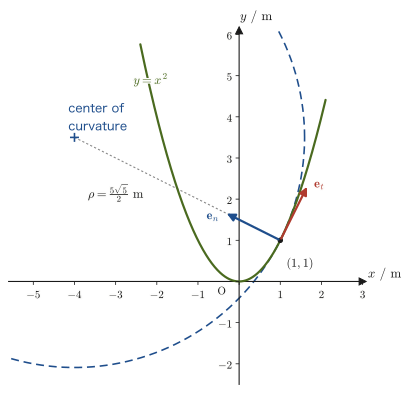

Chapter 3Description of Curvilinear Motion — Polar Coordinates and Tangential and Normal Acceleration
Throw a ball and it flies along a parabola, a car goes around a curve, and an artificial satellite circles the Earth in an elliptical orbit—most of the motion in nature is curvilinear motion, not motion along a straight line. In high school physics, you should have learned, as a formula, that the centripetal acceleration in uniform circular motion is $a=v^2/r$ ($r$: the radius of the circle). However, the curve of a road that a car follows is not necessarily a circular arc; it is a general curve whose curvature changes smoothly. How, then, should we express the acceleration of an object moving along such a general curve?
In this chapter we acquire another powerful tool of mechanics: decomposing the acceleration of an object moving along a curve into a component along the direction of motion (the tangential direction) and a component perpendicular to it (the normal direction). Remarkably, it will be shown that the normal component of the acceleration can be expressed, using the radius of the circle that fits the curve best at each instant (the osculating circle)—the radius of curvature $\rho$ (rho)—in exactly the same form $v^2/\rho$ as the circular-motion formula learned in high school. In other words, the high school formula $a=v^2/r$ is really just the result for the special case of circular motion, and it is contained in the general theory we study in this chapter.
This chapter also introduces polar coordinates ($r,\theta$), another coordinate system for specifying a position in a plane. Polar coordinates specify the position of a point by its distance from the origin and an angle, and they come into their own in the later chapters (Chapter 6, Chapter 8) that treat centrally symmetric forces (universal gravitation, the Coulomb force, and so on). Here we first confirm the definition of polar coordinates themselves, and that the basis vectors $\bm{e}_r,\bm{e}_\theta$ of polar coordinates can be expressed as a rotation of the basis vectors $\bm{e}_x,\bm{e}_y$ of rectangular coordinates.
- How to represent a point in a plane by polar coordinates $(r,\theta)$, and the conversion in both directions between these and rectangular coordinates $(x,y)$, $x=r\cos\theta,\ y=r\sin\theta$
- That the basis vectors $\bm{e}_r,\bm{e}_\theta$ of polar coordinates are obtained by rotating the basis vectors $\bm{e}_x,\bm{e}_y$ of rectangular coordinates through the angle $\theta$ (representation by a rotation matrix)
- The definitions of the unit tangent vector $\bm{e}_t$ (the direction of the velocity) and the unit normal vector $\bm{e}_n$ (the direction pointing toward the center of curvature) of a curvilinear motion
- A derivation, omitting not a single line, of the facts that $\bm{e}_t$ changes its direction with time and that its rate of change $\dd\bm{e}_t/\dd t$ is expressed as $(v/\rho)\bm{e}_n$ using the radius of curvature $\rho$ and the speed $v$
- The tangential–normal decomposition of the acceleration in curvilinear motion, $\bm{a}=\dot v\,\bm{e}_t+(v^2/\rho)\,\bm{e}_n$ (the central result of this chapter; $\dot v=\dd v/\dd t$, and a dot over a variable denotes the time derivative)
- The formula $\rho=v^3/\abs{\bm{v}\times\bm{a}}$, which computes the radius of curvature directly from the velocity and acceleration alone, and the formula $\rho=(1+f'^2)^{3/2}/\abs{f''}$ for the radius of curvature of a graph $y=f(x)$ that follows from it
Source notes: Yasuhide Mochizuki, Physics Notes: Mechanics, pp. 5–7 (p. 8 is blank).
3.1 Transformation to Plane Polar Coordinates
Ever since high school mathematics, we have represented the position of a point in a plane by a pair of numbers $(x,y)$. This is a method that tells how far one goes from the origin $\mathrm O$ in the $x$-axis direction and in the $y$-axis direction, respectively, and it is called rectangular coordinates (Cartesian coordinates) (University Mathematics, Section 16.1). However, $(x,y)$ is not the only way to represent the position of a point. For example, when tracking the position of an airplane by radar we use “the distance from the radar station” and “the angle from a reference direction,” and when explaining where we are on a map we often convey the position by distance and angle, as in “$200\ \mathrm m$ from that tower toward the northeast.” A coordinate system that represents a point in a plane by a pair consisting of the distance from the origin and an angle in this way is called polar coordinates.
Definition 3.1: Plane polar coordinates
In the plane, fix an origin $\mathrm O$ and a reference half-line (the initial line, in most cases the positive part of the $x$-axis). For a point $P$ in the plane, consider the following two quantities:
- $r$: the distance from the origin $\mathrm O$ to the point $P$ ($r\ge0$)
- $\theta$: the angle measured counterclockwise from the initial line to the direction of the point $P$ (the argument, generally expressed in $\mathrm{rad}$)
The pair $(r,\theta)$ of these is called the polar coordinates of the point $P$. A coordinate system in the plane that uses $r,\theta$ defined in this way as its coordinates is called plane polar coordinates. The argument is considered in the range $0\le\theta\lt2\pi$ (or $-\pi\lt\theta\le\pi$). At the origin $\mathrm O$ itself ($r=0$) the direction is not determined, so $\theta$ is not determined.
If the rectangular coordinates of the point $P$ are $(x,y)$, they are related to the polar coordinates $(r,\theta)$ as in Figure 3.1 below. Consider the right triangle formed by three points: the origin $\mathrm O$, the point $P$, and the foot of the perpendicular dropped from $P$ to the $x$-axis. By the definition of the trigonometric ratios (high school mathematics), in a right triangle whose hypotenuse has length $r$ and which makes the angle $\theta$ with the $x$-axis, the base and the height are $x,y$, respectively. Therefore,
Formula 3.1: Conversion between polar and rectangular coordinates
If the rectangular coordinates of the point $P$ are $(x,y)$ and its polar coordinates are $(r,\theta)$, the following relations hold.
\begin{equation} x=r\cos\theta,\qquad y=r\sin\theta \label{eq:3-polar-to-xy} \end{equation} \begin{equation} r=\sqrt{x^2+y^2},\qquad \theta=\tan^{-1}\frac{y}{x} \label{eq:3-xy-to-polar} \end{equation}Eq. \eqref{eq:3-xy-to-polar} is obtained by solving Eq. \eqref{eq:3-polar-to-xy} in reverse for $r,\theta$. Indeed,
$$ x^2+y^2=r^2\cos^2\theta+r^2\sin^2\theta=r^2(\cos^2\theta+\sin^2\theta)=r^2 $$(the last equality follows from the fundamental trigonometric identity $\cos^2\theta+\sin^2\theta=1$; see High School Mathematics, Section 3.1). Hence, noting that $r\ge0$ and taking the square root of both sides, we obtain $r=\sqrt{x^2+y^2}$. Also, for $x\neq0$,
$$ \frac{y}{x}=\frac{r\sin\theta}{r\cos\theta}=\tan\theta $$so, using the inverse function of $\tan$ (the inverse tangent function, $\tan^{-1}$ or $\arctan$), we can write $\theta=\tan^{-1}(y/x)$.
Caution: The pitfall of $\theta=\tan^{-1}(y/x)$—watch the quadrant
The principal value of the inverse tangent function $\tan^{-1}$ (the value fixed in the most standard way) lies in the range $(-\pi/2,\pi/2)$; that is, it returns only angles in the right half-plane ($x\gt0$). However, the ratio $y/x$ takes the same value at two points symmetric about the origin, such as $(x,y)$ and $(-x,-y)$ (for example, $y/x=1$ for both $(1,1)$ and $(-1,-1)$). Therefore, if we use $\theta=\tan^{-1}(y/x)$ as it stands, an angle in the first or fourth quadrant may be returned even though the point actually lies in the second or third quadrant ($x\lt0$). To obtain the correct angle, check the signs of $x,y$ (that is, which quadrant the point lies in) separately and, if necessary, correct $\theta$, for instance by adding $\pi$. In practice, it is safe to use the two-variable function $\operatorname{atan2}(y,x)$, which determines the signs of $x,y$ automatically (it is built into many programming languages and scientific calculators). Also, when $x=0$, $y/x$ cannot be defined; in that case $\theta=\pi/2$ if $y\gt0$, and $\theta=3\pi/2$ if $y\lt0$. We check this point concretely in Example 3.1(c) of this chapter.
Example 3.1: Converting between rectangular and polar coordinates
(a) Find the polar coordinates $(r,\theta)$ of the point $(x,y)=(3,4)$ (in units of $\mathrm m$). (b) Find the rectangular coordinates $(x,y)$ of the point whose polar coordinates are $(r,\theta)=(5\ \mathrm m,\ \pi/3)$. (c) Find the polar coordinates of the point $(x,y)=(-3,4)$ (in units of $\mathrm m$). Also note what happens if $\theta=\tan^{-1}(y/x)$ is used as it stands.
Solution. (a) By Formula 3.1, we have
$$ r=\sqrt{x^2+y^2}=\sqrt{3^2+4^2}=\sqrt{25}=5\ \mathrm m $$The angle is $\theta=\tan^{-1}(4/3)$, and since $(x,y)=(3,4)$ lies in $x\gt0,\ y\gt0$ (the first quadrant), we may use the principal value as it is:
$$ \theta=\tan^{-1}\frac{4}{3}\approx0.927\ \mathrm{rad}\ (\approx53.1^\circ) $$Therefore $(r,\theta)\approx(5\ \mathrm m,\ 0.927\ \mathrm{rad})$.
(b) We use the forward equations of Formula 3.1. Since $\cos(\pi/3)=1/2,\ \sin(\pi/3)=\sqrt3/2$, we have
$$ x=r\cos\theta=5\times\frac12=2.5\ \mathrm m,\qquad y=r\sin\theta=5\times\frac{\sqrt3}{2}=\frac{5\sqrt3}{2}\approx4.33\ \mathrm m $$These are the rectangular coordinates of the point.
(c) The distance is $r=\sqrt{(-3)^2+4^2}=\sqrt{25}=5\ \mathrm m$. Since $y/x=4/(-3)=-4/3$, the principal value of $\tan^{-1}$ is
$$ \tan^{-1}\Bigl(-\frac43\Bigr)\approx-0.927\ \mathrm{rad}\ (\approx-53.1^\circ) $$This is an angle in the fourth quadrant ($x\gt0,\ y\lt0$), whereas the actual point $(-3,4)$ lies in the second quadrant ($x\lt0,\ y\gt0$), so as it stands it is wrong. Since $\tan(\theta+\pi)=\tan\theta$, correcting by adding $\pi$ gives
$$ \theta=\tan^{-1}\Bigl(-\frac43\Bigr)+\pi\approx-0.927+3.142=2.214\ \mathrm{rad}\ (\approx126.9^\circ) $$As a check, verify that $\cos\theta=x/r=-3/5=-0.6,\ \sin\theta=y/r=4/5=0.8$: we have $\cos2.214\approx-0.6,\ \sin2.214\approx0.8$, so this is indeed an angle in the second quadrant. Therefore $(r,\theta)\approx(5\ \mathrm m,\ 2.214\ \mathrm{rad})$. (The function $\operatorname{atan2}(4,-3)$ also returns the same $2.214$.)
3.2 Basis Vectors of the Polar Coordinate System — The Rotation Matrix
Rectangular coordinates have unit vectors $\bm{e}_x,\bm{e}_y$ pointing in the positive directions of the $x$-axis and the $y$-axis, respectively. Polar coordinates also have a pair of unit vectors that play the same role. When the position of a point $P$ is expressed as $(r,\theta)$, we define the two unit vectors as follows:
- $\bm{e}_r$: the unit vector in the direction in which $r$ increases, that is, the direction from the origin $\mathrm O$ to the point $P$ (the radial direction)
- $\bm{e}_\theta$: the unit vector in the direction in which $\theta$ increases, that is, the direction in which the point $P$ moves slightly counterclockwise about the origin (the azimuthal direction)
The major difference is that, whereas $\bm{e}_x,\bm{e}_y$ point in the same direction everywhere in the plane (they are independent of position), $\bm{e}_r,\bm{e}_\theta$ change direction with the position of the point $P$ (more precisely, with the angle $\theta$)—this is an important property that will appear repeatedly when we later consider curvilinear motion, so let us make sure we grasp it firmly here.
As Figure 3.2 shows, $(\bm{e}_r,\bm{e}_\theta)$ is $(\bm{e}_x,\bm{e}_y)$ rotated counterclockwise by the angle $\theta$. Let us check this in terms of components. Since $\bm{e}_r$ is the unit vector pointing at the angle $\theta$ from the $x$-axis, its $x,y$ components are $\cos\theta,\sin\theta$, respectively (the coordinates of a point on the unit circle—precisely the definition of the trigonometric functions in high school mathematics). Similarly, $\bm{e}_\theta$ points in the direction obtained by rotating $\bm{e}_r$ a further $90^\circ$ counterclockwise, so, by $\cos(\theta+90^\circ)=-\sin\theta,\ \sin(\theta+90^\circ)=\cos\theta$ (the addition formulas, High School Mathematics, Chapter 5), its components are $(-\sin\theta,\cos\theta)$. To summarize,
Formula 3.2: Basis vectors of polar coordinates
\begin{equation} \bm{e}_r=\cos\theta\,\bm{e}_x+\sin\theta\,\bm{e}_y,\qquad \bm{e}_\theta=-\sin\theta\,\bm{e}_x+\cos\theta\,\bm{e}_y \label{eq:3-basis-polar} \end{equation}Written in matrix form, the relation reads
$$ \begin{bmatrix}\bm{e}_r\\ \bm{e}_\theta\end{bmatrix} =\begin{bmatrix}\cos\theta&\sin\theta\\-\sin\theta&\cos\theta\end{bmatrix} \begin{bmatrix}\bm{e}_x\\ \bm{e}_y\end{bmatrix} $$.
Math Tool: Relation to the rotation matrix
The rotation matrix about the $z$-axis that we learned in University Mathematics, Section 16.4 (Theorem 16.1), when restricted to the $xy$-plane (two dimensions), becomes the rotation matrix for the angle $\theta$, $R(\theta)=\begin{bmatrix}\cos\theta&-\sin\theta\\\sin\theta&\cos\theta\end{bmatrix}$. Multiplying a column vector by this matrix from the left gives the vector rotated counterclockwise by $\theta$ about the origin. Indeed, $R(\theta)\begin{bmatrix}1\\0\end{bmatrix}=\begin{bmatrix}\cos\theta\\\sin\theta\end{bmatrix}$ and $R(\theta)\begin{bmatrix}0\\1\end{bmatrix}=\begin{bmatrix}-\sin\theta\\\cos\theta\end{bmatrix}$, and this is exactly the statement that “$\bm e_x,\bm e_y$ rotated by $\theta$ give $\bm e_r,\bm e_\theta$” (Figure 3.2, right).
However, the matrix $\begin{bmatrix}\cos\theta&\sin\theta\\-\sin\theta&\cos\theta\end{bmatrix}$ in Formula 3.2 is not $R(\theta)$ but is equal to its transpose $R(\theta)^{\mathrm T}$. Since a rotation matrix is an orthogonal matrix, $R(\theta)^{\mathrm T}=R(\theta)^{-1}=R(-\theta)$ (the inverse matrix is the rotation in the opposite direction). Using $\cos(-\theta)=\cos\theta,\ \sin(-\theta)=-\sin\theta$, Formula 3.2 can be rewritten in the following form:
$$ \begin{bmatrix}\cos(-\theta)&-\sin(-\theta)\\\sin(-\theta)&\cos(-\theta)\end{bmatrix} \begin{bmatrix}\bm{e}_x\\ \bm{e}_y\end{bmatrix} =\begin{bmatrix}\bm{e}_r\\ \bm{e}_\theta\end{bmatrix} $$The reason that “the matrix is the one for $-\theta$ even though the rotation is by $\theta$” lies in the difference in how the matrix is multiplied. When we multiply by $R(\theta)$, the components $(\cos\theta,\sin\theta)$ of $\bm e_r$ line up in the first column of the matrix, whereas in Formula 3.2 we stack the pair of vectors $(\bm e_x,\bm e_y)$ vertically and multiply from the left, so the same components line up in the first row. Because rows and columns are interchanged (transposed), the result is $R(-\theta)$. Let us check. For $\theta=90^\circ$ we have $\bm e_r=\bm e_y$ and $\bm e_\theta=-\bm e_x$, and multiplying $(\bm e_x,\bm e_y)$ by $R(-90^\circ)=\begin{bmatrix}0&1\\-1&0\end{bmatrix}$ gives $(\bm e_y,\,-\bm e_x)$, which agrees.
As another way of looking at it, the same matrix also appears in the transformation of the components of a vector. The components of the vector $\bm V=V_x\bm e_x+V_y\bm e_y=V_r\bm e_r+V_\theta\bm e_\theta$ are $V_r=\bm V\cdot\bm e_r=V_x\cos\theta+V_y\sin\theta$ and $V_\theta=\bm V\cdot\bm e_\theta=-V_x\sin\theta+V_y\cos\theta$, that is, $\begin{bmatrix}V_r\\V_\theta\end{bmatrix}=R(-\theta)\begin{bmatrix}V_x\\V_y\end{bmatrix}$. Since it is the basis that has been rotated by $\theta$, the components of the same vector appear to be rotated in the opposite direction, by $-\theta$ (Figure 3.2, right). For example, if $\bm V=\bm e_x$, then $(V_r,V_\theta)=(\cos\theta,-\sin\theta)$, which means $\bm e_x=\cos\theta\,\bm e_r-\sin\theta\,\bm e_\theta$ (the inverse of the relation in Formula 3.2). Incidentally, the meaning of this matrix is also treated in the “Review of rotation matrices” box in University Mathematics, Section 16.6 (Velocity and Acceleration in Polar Coordinates). In Chapter 6 of this book, we use this relation to derive the velocity and acceleration in polar coordinates, $\bm{v}=\dot r\,\bm{e}_r+r\dot\theta\,\bm{e}_\theta$.
Intuition: Why do $\bm{e}_r,\bm{e}_\theta$ change direction with position?
$\bm{e}_x,\bm{e}_y$ are absolute directions like “east” and “north,” so their directions do not change wherever you are in the plane. On the other hand, $\bm{e}_r$ is “the direction from the origin to the place where you are now,” so naturally its direction changes when the place where you stand (the angle $\theta$) changes—just as “north” on a map always points the same way, whereas “the direction of my home” depends on where I am. This property that “the directions of the basis vectors change with position” is a general one that appears in cylindrical and spherical coordinates as well (University Mathematics, Sections 16.2–16.3), and it will play a central role from Section 3.3 onward, where we treat objects moving along curves.
Example 3.2: Components and orthogonality of the basis vectors
Find the polar-coordinate basis vectors $\bm{e}_r,\bm{e}_\theta$ at the position $\theta=\pi/3\ (=60^\circ)$ in terms of their components with respect to $\bm{e}_x,\bm{e}_y$. Also verify that $\bm{e}_r,\bm{e}_\theta$ are both unit vectors and are orthogonal to each other ($\bm{e}_r\cdot\bm{e}_\theta=0$).
Solution. Substituting $\cos(\pi/3)=1/2,\ \sin(\pi/3)=\sqrt3/2$ into Formula 3.2 gives
$$ \bm{e}_r=\frac12\bm{e}_x+\frac{\sqrt3}{2}\bm{e}_y=\Bigl[\frac12,\ \frac{\sqrt3}{2}\Bigr],\qquad \bm{e}_\theta=-\frac{\sqrt3}{2}\bm{e}_x+\frac12\bm{e}_y=\Bigl[-\frac{\sqrt3}{2},\ \frac12\Bigr] $$The magnitudes are, respectively,
$$ \abs{\bm{e}_r}=\sqrt{\left(\frac12\right)^2+\left(\frac{\sqrt3}{2}\right)^2}=\sqrt{\frac14+\frac34}=\sqrt1=1,\qquad \abs{\bm{e}_\theta}=\sqrt{\left(-\frac{\sqrt3}{2}\right)^2+\left(\frac12\right)^2}=1 $$so both are indeed unit vectors (this always holds for general $\theta$ as well, since $\cos^2\theta+\sin^2\theta=1$). The inner product is
$$ \bm{e}_r\cdot\bm{e}_\theta=\frac12\times\left(-\frac{\sqrt3}{2}\right)+\frac{\sqrt3}{2}\times\frac12=-\frac{\sqrt3}{4}+\frac{\sqrt3}{4}=0 $$so orthogonality is confirmed (we will verify in Exercise 3.4 that $\bm{e}_r\cdot\bm{e}_\theta=-\cos\theta\sin\theta+\sin\theta\cos\theta=0$ also holds for general $\theta$).
3.3 The Unit Tangent Vector and Velocity
From here on, leaving polar coordinates behind, we consider the motion of a particle (point mass) moving along a general curve. We express the position of the particle as a function of time $t$ by
$$ \bm{r}(t)=[x(t),\,y(t),\,z(t)] $$(we treat the motion as taking place in three-dimensional space, but for planar motion we may simply always set $z(t)=0$). The trajectory traced out by the particle is in general not a straight line but a curve. For this curve we define the following two unit vectors.
Definition 3.2: Unit tangent vector and unit principal normal vector
At each point of the curve, the unit vector that points in the direction of the motion, that is, along the tangent to the curve, is called the unit tangent vector and is denoted by $\bm{e}_t$. Moreover, when the vector $\dd\bm e_t/\dd S$ obtained by differentiating $\bm e_t$ with respect to the arc length $S$ is not $\bm0$, the unit vector in its direction is called the unit principal normal vector and is denoted by $\bm{e}_n$. Differentiating $\bm e_t\cdot\bm e_t=1$ (a constant) with respect to $S$ gives $\bm e_t\cdot\dd\bm e_t/\dd S=0$ (we will check this in detail in Section 3.4), so $\bm{e}_t$ and $\bm{e}_n$ are always mutually orthogonal unit vectors ($\bm{e}_t\cdot\bm{e}_n=0,\ \abs{\bm{e}_t}=\abs{\bm{e}_n}=1$). For a curve in a plane, $\bm e_n$ points toward the side to which the curve bends (the concave side), that is, the side on which the center of curvature (to be defined after Definition 3.3) lies. For a curve in three dimensions, the plane in which the curve bends may change from point to point, but the definition of $\bm e_n$ is the same. For a straight line, $\dd\bm e_t/\dd S=\bm0$, so $\bm e_n$ is not determined.
The velocity vector of the particle is given, as the time derivative of the position vector (University Mathematics, Chapter 17, Definition 17.1), by
$$ \bm{v}(t)=\dot{\bm{r}}(t)=\left[\frac{\dd x}{\dd t},\ \frac{\dd y}{\dd t},\ \frac{\dd z}{\dd t}\right] $$(here $\dot{\bm r}$, read “r dot,” denotes the time derivative $\dd\bm r/\dd t$ of $\bm r$; this is Newton's notation). As we saw in the intuition figure of University Mathematics, Chapter 17 (Section 17.1), $\bm v(t)$ is obtained by dividing the displacement vector $\bm r(t+\Delta t)-\bm r(t)$ over a short time interval $\Delta t$ by $\Delta t$ and taking the limit $\Delta t\to0$. Since this displacement vector has the direction of the chord joining two points on the curve, in the limit $\Delta t\to0$ it points along the tangent to the curve. That is, $[\dd x,\dd y,\dd z]$ is a vector in the tangent direction, and therefore $\bm v(t)$ also points in the tangent direction. If we let the magnitude of the velocity vector (the speed) be
$$ v\equiv\abs{\bm v(t)}=\sqrt{\dot x^2+\dot y^2+\dot z^2} $$then $\bm v(t)$ can be written as a vector “of magnitude $v$ and direction $\bm e_t$” as follows.
Theorem 3.1: The velocity vector points in the tangent direction
\begin{equation} \bm{v}(t)=v(t)\,\bm{e}_t(t) \label{eq:3-v-et} \end{equation}That is, the direction of the velocity vector is always the tangent direction of the trajectory, and its magnitude is the speed $v$.
Caution: $\bm{e}_t$ also changes with time
The basis vectors $\bm e_x,\bm e_y,\bm e_z$ of rectangular coordinates were constant vectors whose directions do not change as time passes. However, just like $\bm e_r,\bm e_\theta$ in Section 3.2, $\bm e_t$ changes its direction as the particle moves along the curve (when the particle passes a place where the curve bends, it is only natural that the direction of travel, which is the direction of the tangent, changes as well). In other words, $\bm e_t$ is a function $\bm e_t(t)$ of time $t$, and in general $\dfrac{\dd}{\dd t}\bm e_t\neq\bm 0$. This has an important consequence when we compute the acceleration next—since the acceleration is the time derivative of the velocity, when we differentiate Eq. \eqref{eq:3-v-et} we must differentiate not only $v(t)$ but also $\bm e_t(t)$ with respect to time.
Example 3.3: Velocity and tangent vector of a point moving on a parabola
The position of a point moving in a plane is given at time $t$ (in seconds) by $\bm r(t)=[t,\ t^2,\ 0]$ (in meters, $t\ge0$). This is a point moving on the parabola $y=x^2$ in the $xy$ plane (since $x=t,\ y=t^2=x^2$). (a) Find the velocity vector $\bm v(t)$ and the speed $v(t)$ as functions of time $t$. (b) Find the unit tangent vector $\bm e_t(t)$. (c) Find $\bm v,\ v,\ \bm e_t$ at $t=1$ (the instant at which the point passes through the point $(1,1)$).
Solution. (a) Differentiating each component with respect to $t$ (Definition 17.1), we obtain
$$ \bm v(t)=\dot{\bm r}(t)=[1,\ 2t,\ 0]\ \mathrm{m/s} $$The speed is
$$ v(t)=\abs{\bm v(t)}=\sqrt{1^2+(2t)^2+0^2}=\sqrt{1+4t^2}\ \mathrm{m/s} $$(b) By Theorem 3.1, $\bm e_t=\bm v/v$, so
$$ \bm e_t(t)=\frac{1}{\sqrt{1+4t^2}}\bigl[1,\ 2t,\ 0\bigr] $$(Let us confirm that $\abs{\bm e_t}=1$ holds regardless of $t$: $\abs{\bm e_t}^2=\dfrac{1^2+(2t)^2}{1+4t^2}=1$.) (c) Substituting $t=1$, we obtain
$$ \bm v(1)=[1,\ 2,\ 0]\ \mathrm{m/s},\qquad v(1)=\sqrt{1+4}=\sqrt5\ \mathrm{m/s}\approx2.24\ \mathrm{m/s} $$ $$ \bm e_t(1)=\frac{1}{\sqrt5}[1,\ 2,\ 0]=\left[\frac{1}{\sqrt5},\ \frac{2}{\sqrt5},\ 0\right]\approx[0.447,\ 0.894,\ 0] $$The vector $\bm e_n$ at this point $(1,1)$ cannot yet be found with the tools of this section alone—after we learn the decomposition of the acceleration in Section 3.4, we will return to the same point in Example 3.4 and find $\bm e_n$ as well.
3.4 The Unit Normal Vector and the Tangential and Normal Components of Acceleration
The acceleration is the time derivative of the velocity, $\bm a=\dot{\bm v}$. Differentiating Eq. \eqref{eq:3-v-et} ($\bm v=v\bm e_t$) with respect to time turns this into the derivative of a product of $v(t)$ and $\bm e_t(t)$, so by the product rule (the form for the derivative of a product of a scalar function and a vector function, which we confirmed in the proof of University Mathematics, Chapter 17, Formula 17.2),
$$ \bm a=\frac{\dd}{\dd t}\bm v=\frac{\dd v}{\dd t}\bm e_t+v\,\frac{\dd}{\dd t}\bm e_t $$As we confirmed in the Caution in Section 3.3, $\dfrac{\dd}{\dd t}\bm e_t$ is in general not $\bm 0$, so we cannot compute the acceleration unless we find this second term. The goal of this section is to find this $\dfrac{\dd}{\dd t}\bm e_t$ explicitly.
To that end, let us first prepare a way to express the “tightness of a curve” by a number. When we advance a distance $\Delta S$ in arc length along a circle of radius $R$, the central angle changes by $\Delta\varphi=\Delta S/R$ (radian measure: arc length = radius × central angle, High School Mathematics, Section 3.4), and the direction of the tangent rotates through exactly the same angle $\Delta\varphi$. That is, for a circle, $R=\Delta S/\Delta\varphi$. For a general curve as well, if we look only at the immediate neighborhood of each point, it can be regarded as part of a circle. We therefore define the limit of this ratio $\Delta S/\Delta\varphi$ as “the counterpart of the radius of a circle” for a general curve.
Definition 3.3: Radius of curvature and center of curvature
Suppose that while we advance by $\Delta S$ along the curve, measured as arc length (University Mathematics, Chapter 17, Definition 17.2), the direction of the tangent (the direction of $\bm e_t$) rotates through an angle $\Delta\varphi\ge0$ (the magnitude of the rotation, in radians). Consider the limit of the reciprocal of the ratio of the rotation angle to the change in arc length:
\begin{equation} \rho\equiv\lim_{\Delta S\to0}\frac{\Delta S}{\Delta\varphi}=\frac{\dd S}{\dd\varphi} \label{eq:3-rho-def} \end{equation}This is called the radius of curvature at that point. The larger $\rho$ is, the more slowly the direction of the tangent changes—that is, the curve is nearly straight (a gentle curve). Conversely, the smaller $\rho$ is, the more abruptly the direction of the tangent changes, and the tighter the curve is. For a straight line, the direction of the tangent does not change however far we advance ($\Delta\varphi=0$), so we may regard $\rho=\infty$. On a circle of radius $R$, when we advance an arc length $\Delta S$ the tangent rotates through exactly the same angle as the central angle, $\Delta\varphi=\Delta S/R$ (this is simply a property of the circle), so $\rho=R$—that is, the radius of curvature of a circle is equal to the radius of the circle itself. We will verify this directly in Example 3.5 of Section 3.5. Furthermore, the point reached by moving a distance $\rho$ from a point $P$ on the curve in the direction of $\bm e_n$ is called the center of curvature, and the circle of radius $\rho$ centered at that point is called the osculating circle (also called the circle of curvature). The osculating circle is the circle that fits the curve most closely at the point $P$. The intersection of the normals at two neighboring points (the straight lines along $\bm e_n$) approaches the center of curvature in the limit $\Delta S\to0$ (the point $\mathrm C$ in the left panel of Figure 3.5). Note that at points where $v=0$, where $\bm e_t$ is not determined, we do not consider the radius of curvature.
Outlook: Computing the rate of change of $\bm e_t$ first for uniform circular motion
Let us anticipate the result and compute $\dd\bm e_t/\dd t$ in the simplest case. A point $\bm r(t)=[R\cos\omega t,\ R\sin\omega t,\ 0]$ going around a circle of radius $R$ at constant angular velocity $\omega$ has velocity $\bm v=[-R\omega\sin\omega t,\ R\omega\cos\omega t,\ 0]$ and speed $v=R\omega$ (constant). Therefore the unit tangent vector is
$$ \bm e_t=\frac{\bm v}{v}=[-\sin\omega t,\ \cos\omega t,\ 0] $$and differentiating with respect to time gives
$$ \frac{\dd\bm e_t}{\dd t}=[-\omega\cos\omega t,\ -\omega\sin\omega t,\ 0]=-\omega\,[\cos\omega t,\ \sin\omega t,\ 0]=\frac{v}{R}\,(-\bm e_r) $$(we used $\omega=v/R$; $\bm e_r=[\cos\omega t,\sin\omega t,0]$ is the unit vector pointing from the center of the circle to the point). That is, the rate of change of $\bm e_t$ has magnitude $v/R$ and points toward the center of the circle ($-\bm e_r$, which is $\bm e_n$). For a general curve as well, if we use the radius of curvature $\rho$ in place of $R$, we obtain the same form $\dd\bm e_t/\dd t=(v/\rho)\bm e_n$; what we will now show line by line is the generalization of this.
Now, let us denote the change in the unit tangent vector between time $t$ and time $t+\Delta t$ by
$$ \Delta\bm e_t\equiv\bm e_t(t+\Delta t)-\bm e_t(t) $$By the definition of the derivative of a vector (the limit taken component by component, University Mathematics, Chapter 17, Definition 17.1), the time derivative of $\bm e_t$ is
$$ \frac{\dd\bm e_t}{\dd t}=\lim_{\Delta t\to0}\frac{\Delta\bm e_t}{\Delta t} $$and the left-hand side of this equation is what we want to find. Let $P_0,P_1$ be the two points on the curve corresponding to times $t,t+\Delta t$, and suppose that the direction of the tangent rotates through an angle $\varphi$ between $P_0$ and $P_1$ (left panel of Figure 3.5). Since both $\bm e_t(t)$ and $\bm e_t(t+\Delta t)$ are unit vectors of magnitude 1, when we draw them from the same starting point their endpoints are the two ends of the arc of a circular sector of radius 1 and central angle $\varphi$ (right panel of Figure 3.5). When $\varphi$ is sufficiently small, the length of the chord (the magnitude of $\Delta\bm e_t$) can be approximated by the length of the arc, and the length of an arc of radius 1 is exactly equal to the central angle $\varphi$ (the very definition of the radian), so the following approximation holds:
$$ \abs{\Delta\bm e_t}\fallingdotseq\abs{\bm e_t(t)}\cdot\varphi=1\cdot\varphi=\varphi $$(The symbol $\fallingdotseq$ means “approximately equal”; the error tends to 0 as $\varphi\to0$.)
On the other hand, let $\Delta S$ be the actual arc length along the curve from $P_0$ to $P_1$. Then the relation $\Delta S\fallingdotseq\rho\varphi$ for the radius of curvature in Definition 3.3 (arc length is “radius $\times$ central angle”) gives
$$ \varphi\fallingdotseq\frac{\Delta S}{\rho} $$Substituting this into the earlier $\abs{\Delta\bm e_t}\fallingdotseq\varphi$, we obtain
$$ \abs{\Delta\bm e_t}\fallingdotseq\frac{\Delta S}{\rho} \qquad\therefore\quad \left|\frac{\Delta\bm e_t}{\Delta t}\right|\fallingdotseq\frac{1}{\rho}\cdot\frac{\Delta S}{\Delta t} $$(we divided both sides by $\Delta t$). Now we take the limit $\Delta t\to0$. By the definition of the derivative of a vector (the same form as University Mathematics, Chapter 17, Eq. 17.1), the left-hand side approaches the following:
$$ \left|\frac{\Delta\bm e_t}{\Delta t}\right|\ \longrightarrow\ \left|\frac{\dd\bm e_t}{\dd t}\right| $$On the right-hand side, $\dfrac{\Delta S}{\Delta t}$ (the arc length traveled per small time interval) is precisely the definition of the speed $v$ (in University Mathematics, Section 17.2, we learned the arc length $S=\int\abs{\bm r\,'(t)}\dd t$, and differentiating this gives $\dd S/\dd t=\abs{\bm r\,'(t)}=v$—the fact that differentiating the arc length with respect to time gives the speed is the same relation as the one we learned in high school, “the derivative of the distance traveled is the speed”), so $\dfrac{\Delta S}{\Delta t}\to v$ as $\Delta t\to0$. Therefore, we have found that
\begin{equation} \left|\frac{\dd\bm e_t}{\dd t}\right|=\frac{v}{\rho} \label{eq:3-det-magnitude} \end{equation}What remains is the direction.
Why is $\dd\bm e_t/\dd t$ parallel to $\bm e_n$?—Two explanations
Geometric explanation: In the triangle on the right of Figure 3.5, consider the limit $\Delta t\to0$ (and hence $\varphi\to0$). The apex angle $\varphi$ of the isosceles triangle approaches 0, so the direction of the base $\Delta\bm e_t$ approaches the direction perpendicular to each of the two equal sides $\bm e_t(t),\bm e_t(t+\Delta t)$. That is, in the limit, $\Delta\bm e_t$ (and hence $\dd\bm e_t/\dd t$) becomes perpendicular to $\bm e_t$. Furthermore, for a curve in a plane, when we go from $P_0$ to $P_1$ the tangent rotates toward the side to which the curve bends (the side of the center of curvature), so $\Delta\bm e_t=\bm e_t(t+\Delta t)-\bm e_t(t)$ also points toward the side of the center of curvature, that is, in the same direction as $\bm e_n$.
Algebraic explanation: Since $\bm e_t$ is a unit vector, $\bm e_t\cdot\bm e_t=1$ (constant) always holds. Differentiating both sides with respect to time, by the product rule for the inner product (the inner-product version of the product rule, $\dfrac{\dd}{\dd t}(\bm a\cdot\bm b)=\dot{\bm a}\cdot\bm b+\bm a\cdot\dot{\bm b}$) we get
$$ \frac{\dd}{\dd t}(\bm e_t\cdot\bm e_t)=2\,\bm e_t\cdot\frac{\dd\bm e_t}{\dd t}=\frac{\dd}{\dd t}(1)=0 \qquad\therefore\quad \bm e_t\cdot\frac{\dd\bm e_t}{\dd t}=0 $$Since the inner product is 0, $\dd\bm e_t/\dd t$ is perpendicular to $\bm e_t$ (in general, the time derivative of a vector whose magnitude does not change is perpendicular to the vector itself—this is a useful property that holds not only for unit vectors but for any vector of constant magnitude). For a curve in three dimensions, the directions perpendicular to $\bm e_t$ are not unique but extend over an entire two-dimensional plane (the normal plane), so perpendicularity alone does not determine the direction. What fixes the direction is the definition of $\bm e_n$ (Definition 3.2). Since the arc length $S$ increases with time, the chain rule for composite functions gives $\dfrac{\dd\bm e_t}{\dd t}=\dfrac{\dd S}{\dd t}\dfrac{\dd\bm e_t}{\dd S}=v\,\dfrac{\dd\bm e_t}{\dd S}$, and since $v\gt0$, $\dd\bm e_t/\dd t$ has the same direction as $\dd\bm e_t/\dd S$, that is, by Definition 3.2, the direction of $\bm e_n$. Therefore, $\dd\bm e_t/\dd t$ is a positive real multiple of $\bm e_n$.
Combining the two arguments above with Eq. \eqref{eq:3-det-magnitude}, we see that $\dd\bm e_t/\dd t$ is a vector of magnitude $v/\rho$ and direction $\bm e_n$:
\begin{equation} \frac{\dd\bm e_t}{\dd t}=\frac{v}{\rho}\bm e_n \label{eq:3-det-vector} \end{equation}Substituting this into the expression for the acceleration set up at the beginning of this section gives the central result of this chapter.
Theorem 3.2: Tangential and normal components of acceleration in curvilinear motion
The acceleration of a particle moving along a curve is expressed as the sum of the component in the direction of the unit tangent vector $\bm e_t$ and the component in the direction of the unit principal normal vector $\bm e_n$, as follows.
\begin{equation} \bm a=\frac{\dd v}{\dd t}\bm e_t+\frac{v^2}{\rho}\bm e_n \label{eq:3-accel-tn} \end{equation}The first term $\dfrac{\dd v}{\dd t}\bm e_t$ is called the tangential acceleration, and the second term $\dfrac{v^2}{\rho}\bm e_n$ is called the normal acceleration (in the case of uniform circular motion, it coincides with the centripetal acceleration, which points toward the center of the circle). The tangential acceleration represents the change in the speed $v$ itself (speeding up or slowing down), and the normal acceleration represents the change in the direction of the velocity (turning).
Dimensional check: The unit of $\dd v/\dd t$ is $\mathrm{(m/s)/s=m/s^2}$, and the unit of $v^2/\rho$ is $\mathrm{(m/s)^2/m=m/s^2}$; both agree with the unit of acceleration. Also, the unit of $v/\rho$ in Eq. \eqref{eq:3-det-vector} is $\mathrm{(m/s)/m=1/s}$, which is correct for the rate of change with time of a unit vector (which is dimensionless). Note also that at points where $\rho=\infty$ (such as straight segments), $v^2/\rho=0$ and the acceleration has only a tangential component.
Intuition: The high school physics formula for uniform circular motion was a special case
Recall the formula $a=v^2/r$ for the centripetal acceleration in uniform circular motion that you learned in high school physics. In uniform circular motion, the speed $v$ is constant, so $\dd v/\dd t=0$ (there is no tangential acceleration), and the radius of curvature $\rho$ is just the radius $r$ of the circle itself (the explanation after Definition 3.3), so Theorem 3.2 becomes $\bm a=(v^2/r)\bm e_n$—this is exactly the formula for the centripetal acceleration learned in high school, with magnitude $v^2/r$ and pointing toward the center (the direction of $\bm e_n$). Theorem 3.2 extends this to “general curvilinear motion, in which the speed may change and the path need not be a circle.”
Example 3.4: Unit normal vector and radius of curvature at a point on a parabola
This continues Example 3.3. For the point moving as $\bm r(t)=[t,\ t^2,\ 0]$ (in meters), find the acceleration $\bm a$, the unit normal vector $\bm e_n$, and the radius of curvature $\rho$ at $t=1$ (the point $(1,1)$).
Solution. By Example 3.3 the velocity is $\bm v(t)=[1,2t,0]$, so the acceleration is
$$ \bm a(t)=\dot{\bm v}(t)=[0,\ 2,\ 0]\ \mathrm{m/s^2}\quad(t\text{-independent, constant}) $$On the other hand, the speed is $v(t)=\sqrt{1+4t^2}$, so the tangential component of the acceleration is
$$ \frac{\dd v}{\dd t}=\frac{4t}{\sqrt{1+4t^2}} \qquad\therefore\quad \left.\frac{\dd v}{\dd t}\right|_{t=1}=\frac{4}{\sqrt5}=\frac{4\sqrt5}{5}\ \mathrm{m/s^2}\approx1.79\ \mathrm{m/s^2} $$(we differentiated a composite function: $\dfrac{\dd}{\dd t}\sqrt{1+4t^2}=\dfrac{8t}{2\sqrt{1+4t^2}}=\dfrac{4t}{\sqrt{1+4t^2}}$). Since $\bm e_t(1)=\bigl[1/\sqrt5,\ 2/\sqrt5,\ 0\bigr]$ by Example 3.3(c), the tangential component vector is
$$ \frac{\dd v}{\dd t}\bm e_t=\frac{4}{\sqrt5}\left[\frac{1}{\sqrt5},\frac{2}{\sqrt5},0\right]=\left[\frac45,\ \frac85,\ 0\right] $$By Theorem 3.2, $\bm a=(\dd v/\dd t)\bm e_t+(v^2/\rho)\bm e_n$, so the normal component vector is found as what remains when the tangential component is subtracted from the whole:
$$ \frac{v^2}{\rho}\bm e_n=\bm a-\frac{\dd v}{\dd t}\bm e_t=[0,2,0]-\left[\frac45,\frac85,0\right]=\left[-\frac45,\ \frac25,\ 0\right] $$Its magnitude is $v^2/\rho$, and its direction is $\bm e_n$. The magnitude is
$$ \frac{v^2}{\rho}=\left|\left[-\frac45,\frac25,0\right]\right|=\sqrt{\left(\frac45\right)^2+\left(\frac25\right)^2}=\sqrt{\frac{16}{25}+\frac4{25}}=\sqrt{\frac{20}{25}}=\frac{2}{\sqrt5}=\frac{2\sqrt5}{5}\ \mathrm{m/s^2} $$Therefore, the unit normal vector is
$$ \bm e_n(1)=\frac{1}{2\sqrt5/5}\left[-\frac45,\frac25,0\right]=\left[-\frac{2}{\sqrt5},\ \frac{1}{\sqrt5},\ 0\right]\approx[-0.894,\ 0.447,\ 0] $$(orthogonality can also be confirmed: $\bm e_t\cdot\bm e_n=\frac{1}{\sqrt5}\times\bigl(-\frac2{\sqrt5}\bigr)+\frac2{\sqrt5}\times\frac1{\sqrt5}=-\frac25+\frac25=0$). Using $v(1)^2=(\sqrt5)^2=5$, the radius of curvature is
$$ \rho=\frac{v^2}{2\sqrt5/5}=\frac{5}{2\sqrt5/5}=\frac{5\sqrt5}{2}\ \mathrm{m}\approx5.59\ \mathrm{m} $$This result also agrees exactly with the value obtained from Formula 3.4, which we derive in Section 3.5 (the radius of curvature of $y=f(x)$, $\rho=(1+f'(x)^2)^{3/2}/\abs{f''(x)}$), by substituting $f'(x)=2x,\ f''(x)=2$ at $x=1$: $\rho=(1+4)^{3/2}/2=5\sqrt5/2\ \mathrm m$. Figure 3.7 shows $\bm e_t,\bm e_n$ at this point together with the osculating circle of radius $\rho$ (the circle that touches the curve and fits it most closely).

3.5 The Formula for the Radius of Curvature and Examples
Using $\bm a=(\dd v/\dd t)\bm e_t+(v^2/\rho)\bm e_n$ of Theorem 3.2, we can subtract the tangential component from the acceleration $\bm a$ to find the magnitude of the normal component, and from it compute the radius of curvature $\rho$, as we did in Example 3.4. However, there is a formula that lets us compute $\rho$ directly with the cross product, without finding $\bm e_t,\bm e_n$ each time, as long as we know the velocity $\bm v(t)$ and the acceleration $\bm a(t)$.
Derivation: A formula for the radius of curvature directly from $\bm v,\bm a$
Take the cross product of both sides of Eq. \eqref{eq:3-accel-tn} of Theorem 3.2 with $\bm v=v\bm e_t$ (Eq. \eqref{eq:3-v-et}) on the left:
$$ \bm v\times\bm a=(v\bm e_t)\times\left(\frac{\dd v}{\dd t}\bm e_t+\frac{v^2}{\rho}\bm e_n\right) =v\frac{\dd v}{\dd t}\,(\bm e_t\times\bm e_t)+\frac{v^3}{\rho}\,(\bm e_t\times\bm e_n) $$(this uses the distributive law of the cross product; see University Mathematics, Section 15.3). Here, the cross product of vectors in the same direction is $\bm e_t\times\bm e_t=\bm 0$ (University Mathematics, Section 15.3: by the definition of the cross product, the cross product of parallel vectors is always $\bm 0$), so the first term vanishes. Also, since $\bm e_t,\bm e_n$ are mutually orthogonal unit vectors, $\bm e_t\times\bm e_n$ is a unit vector of magnitude $\abs{\bm e_t}\abs{\bm e_n}\sin90^\circ=1$ (its direction is perpendicular to both of $\bm e_t,\bm e_n$, the direction fixed by the right-hand rule; for planar motion, it is along the $z$ axis). Therefore,
$$ \bm v\times\bm a=\frac{v^3}{\rho}(\bm e_t\times\bm e_n),\qquad \abs{\bm e_t\times\bm e_n}=1 $$and taking the magnitude of both sides gives
$$ \abs{\bm v\times\bm a}=\frac{v^3}{\rho} $$Noting that $\rho\gt0$, we solve this for $\rho$ and obtain the desired formula.
∎
Formula 3.3: Radius of curvature (found directly from velocity and acceleration)
\begin{equation} \rho=\frac{v^3}{\abs{\bm v\times\bm a}} \label{eq:3-rho-formula} \end{equation}This holds only when $v\ne0$ and $\bm v\times\bm a\ne\bm 0$. At points where $\bm v\times\bm a=\bm 0$ (when the motion is rectilinear, and at inflection points where the direction of the tangent momentarily does not change, and so on), the denominator on the right-hand side is 0, and we regard $\rho=\infty$ (in this case $\bm e_n$ is not determined). If the velocity $\bm v(t)$ and the acceleration $\bm a(t)$ of the particle are known, the radius of curvature can be computed directly, without going through the decomposition into tangential and normal components. For planar motion ($\bm v,\bm a$ both in the $xy$ plane), $\bm v\times\bm a$ has only a $z$ component, and it can be computed from the components alone as $\abs{\bm v\times\bm a}=\abs{v_x a_y-v_y a_x}$.
As a special case of Formula 3.3, we can derive the formula for the radius of curvature of the graph $y=f(x)$. We use it in Example 3.4 and Exercise 3.5, so let us derive it here.
Derivation: The radius of curvature of the graph $y=f(x)$
The radius of curvature is a quantity determined only by the shape of the curve, so we may investigate it by moving a point along the curve in whatever way we like. We therefore consider the motion $\bm r=[x,\ f(x),\ 0]$ in which the $x$ coordinate increases at the same rate as time (we regard $x$ as the variable in place of time; $\dd x/\dd x=1$). Differentiating each component with respect to $x$ gives
$$ \bm v=[1,\ f'(x),\ 0],\qquad \bm a=[0,\ f''(x),\ 0] $$(here $f''(x)$ is $f'(x)$ differentiated once more with respect to $x$). The speed is $v=\sqrt{1+f'(x)^2}$. By the component formula for the cross product (University Mathematics, Section 15.4), the cross product is
$$ \bm v\times\bm a=[\,f'(x)\cdot0-0\cdot f''(x),\ \ 0\cdot0-1\cdot0,\ \ 1\cdot f''(x)-f'(x)\cdot0\,]=[0,\ 0,\ f''(x)] $$so $\abs{\bm v\times\bm a}=\abs{f''(x)}$. It suffices to substitute these into Formula 3.3.
∎
Formula 3.4: Radius of curvature of the graph $y=f(x)$
\begin{equation} \rho=\frac{\bigl(1+f'(x)^2\bigr)^{3/2}}{\abs{f''(x)}} \label{eq:3-rho-graph} \end{equation}At a point where $f''(x)=0$ (an inflection point), $\rho=\infty$. For example, at the point $(1,1)$ of $y=x^2$ we have $f'=2,\ f''=2$, so $\rho=(1+4)^{3/2}/2=5\sqrt5/2$; at the peak $x=\pi/2$ of $y=\sin x$ we have $f'=0,\ f''=-1$, so $\rho=1/1=1$.
Using Formula 3.3, let us find the radius of curvature by two methods in Illustration 3.1 below and compare the results.
Illustration 3.1: Speed and radius of curvature of a point moving along a curve
The position of a particle $\mathrm P$ is given by $\bm r(t)=\left[\dfrac{t^2}{2},\ t,\ 2-t\right]$ (the components are in $\mathrm m$, and $t$ is measured in $\mathrm s$). Find its speed $v$ and radius of curvature $\rho$ at time $t$. Also find $\bm e_t,\bm e_n$ at $t=0$.
Solution. Differentiating each component gives
$$ \bm v(t)=\dot{\bm r}(t)=[t,\ 1,\ -1]\ \mathrm{m/s} \qquad\therefore\quad v=\abs{\bm v(t)}=\sqrt{t^2+1^2+(-1)^2}=\sqrt{t^2+2}\ \mathrm{m/s} $$The tangential component of the acceleration is
$$ \frac{\dd v}{\dd t}=\frac{\dd}{\dd t}\sqrt{t^2+2}=\frac{2t}{2\sqrt{t^2+2}}=\frac{t}{\sqrt{t^2+2}}\ \mathrm{m/s^2} $$Therefore, by Theorem 3.2, the acceleration can be decomposed into tangential and normal components and written as
\begin{equation} \bm a=\frac{\dd v}{\dd t}\bm e_t+\frac{v^2}{\rho}\bm e_n=\frac{t}{\sqrt{t^2+2}}\bm e_t+\frac{t^2+2}{\rho}\bm e_n \label{eq:3-ex31-decomp} \end{equation}On the other hand, differentiating $\bm r(t)$ once more gives the acceleration directly:
\begin{equation} \bm a(t)=\ddot{\bm r}(t)=[1,\ 0,\ 0]\ \mathrm{m/s^2} \qquad\therefore\quad \abs{\bm a}=\sqrt{1^2+0^2+0^2}=1\ \mathrm{m/s^2} \label{eq:3-ex31-a} \end{equation}Eq. \eqref{eq:3-ex31-decomp} is a decomposition into the mutually orthogonal unit vectors $\bm e_t,\bm e_n$, so, in the same way as with the Pythagorean theorem, $\abs{\bm a}^2$ is equal to the sum of the squares of the two components (since $\bm e_t\cdot\bm e_n=0$, the cross terms vanish on expansion). Using Eq. \eqref{eq:3-ex31-a}, namely $\abs{\bm a}^2=1$, we have
\begin{equation} \abs{\bm a}^2=\left(\frac{t}{\sqrt{t^2+2}}\right)^2+\left(\frac{t^2+2}{\rho}\right)^2=\frac{t^2}{t^2+2}+\frac{(t^2+2)^2}{\rho^2}=1 \label{eq:3-ex31-sq} \end{equation}Solving Eq. \eqref{eq:3-ex31-sq} for $\rho^2$ gives
$$ \frac{(t^2+2)^2}{\rho^2}=1-\frac{t^2}{t^2+2}=\frac{(t^2+2)-t^2}{t^2+2}=\frac{2}{t^2+2} $$ $$ \therefore\quad \rho^2=\frac{(t^2+2)^2(t^2+2)}{2}=\frac{(t^2+2)^3}{2} $$Taking the square root of both sides (with $\rho\gt0$) gives
$$ \rho=\frac{(t^2+2)\sqrt{t^2+2}}{\sqrt2}\ \mathrm m $$as the radius of curvature.
Check using Formula 3.3: For $\bm v=[t,1,-1],\ \bm a=[1,0,0]$, the cross product, by the component formula (University Mathematics, Section 15.4), is
$$ \bm v\times\bm a=[\,1\times0-(-1)\times0,\ \ (-1)\times1-t\times0,\ \ t\times0-1\times1\,]=[0,\ -1,\ -1] $$ $$ \therefore\quad \abs{\bm v\times\bm a}=\sqrt{0^2+(-1)^2+(-1)^2}=\sqrt2 $$Substituting into Formula 3.3 gives
$$ \rho=\frac{v^3}{\abs{\bm v\times\bm a}}=\frac{(t^2+2)^{3/2}}{\sqrt2}=\frac{(t^2+2)\sqrt{t^2+2}}{\sqrt2} $$which agrees exactly with the result obtained from the system of Eqs. \eqref{eq:3-ex31-decomp} through \eqref{eq:3-ex31-sq}. Two independent calculations, one that decomposes the acceleration into tangential and normal components and one that uses the cross product, have reached the same answer, so we can be highly confident in both results.
$\bm e_t,\bm e_n$ at $t=0$: We have $\bm v(0)=[0,1,-1]$, $v(0)=\sqrt2$, and $\bm a(0)=[1,0,0]$. Since $\dd v/\dd t=t/\sqrt{t^2+2}$ is 0 at $t=0$, there is no tangential acceleration, and the acceleration is entirely a normal component: $\bm a=(v^2/\rho)\bm e_n$. Hence $\bm e_t(0)=\bm v/v=[0,1,-1]/\sqrt2$, $\bm e_n(0)=\bm a/\abs{\bm a}=[1,0,0]$, and $\rho(0)=v^2/\abs{\bm a}=2/1=2\ \mathrm m$ (this agrees with $2^{3/2}/\sqrt2=2$, obtained by substituting $t=0$ into the general expression above). Indeed, $\bm e_t\cdot\bm e_n=[0,1,-1]\cdot[1,0,0]/\sqrt2=0$, so they are orthogonal.
Interpretation: $\rho(t)=(t^2+2)^{3/2}/\sqrt2$ takes its minimum value $2\ \mathrm m$ at $t=0$ and becomes larger as $\abs t$ becomes larger. The trajectory of this motion is a parabola lying in the plane $y+z=2$, and $t=0$ corresponds to its vertex. This is consistent with the shape of a parabola: it bends most strongly at the vertex and approaches a straight line as we move away from it.
Example 3.5: Radius of curvature of uniform circular motion
The position of a point performing uniform circular motion with (constant) angular velocity $\omega$ on a circle of radius $R$ is given by $\bm r(t)=[R\cos\omega t,\ R\sin\omega t,\ 0]$. Use Formula 3.3 to verify that the radius of curvature of this motion is $\rho=R$ (equal to the radius of the circle itself).
Solution. The velocity and the acceleration are, respectively,
$$ \bm v(t)=[-R\omega\sin\omega t,\ R\omega\cos\omega t,\ 0],\qquad \bm a(t)=[-R\omega^2\cos\omega t,\ -R\omega^2\sin\omega t,\ 0] $$The speed is $v=\abs{\bm v}=\sqrt{R^2\omega^2\sin^2\omega t+R^2\omega^2\cos^2\omega t}=R\omega$ (constant, independent of $t$—this is what “uniform” means). The $z$ component of the cross product is
$$ v_xa_y-v_ya_x=(-R\omega\sin\omega t)(-R\omega^2\sin\omega t)-(R\omega\cos\omega t)(-R\omega^2\cos\omega t) $$ $$ =R^2\omega^3\sin^2\omega t+R^2\omega^3\cos^2\omega t=R^2\omega^3 $$so $\abs{\bm v\times\bm a}=R^2\omega^3$. Substituting into Formula 3.3, we obtain
$$ \rho=\frac{v^3}{\abs{\bm v\times\bm a}}=\frac{(R\omega)^3}{R^2\omega^3}=\frac{R^3\omega^3}{R^2\omega^3}=R $$Thus the fact stated after Definition 3.3, that “the radius of curvature of a circle equals its radius,” has been confirmed using Formula 3.3 as well.
Incidentally, the acceleration of uniform circular motion can also be examined directly by differentiating the position vector twice (Section 5.4). The form it takes when viewed in terms of the polar-coordinate components $(a_r,a_\theta)$ is treated in Example 6.3, as a comparison with the tangential and normal components.
Example 3.6: Radius of curvature of helical motion
Find the radius of curvature $\rho$ of the motion $\bm r(t)=[\cos t,\ \sin t,\ t]$ (the components are in $\mathrm m$, and $t$ is measured in $\mathrm s$; this is helical motion in which the point goes around the unit circle in the $xy$ plane while simultaneously advancing at a constant speed in the $z$ direction).
Solution. The velocity and the acceleration are
$$ \bm v(t)=[-\sin t,\ \cos t,\ 1],\qquad \bm a(t)=[-\cos t,\ -\sin t,\ 0] $$and the speed is $v=\sqrt{\sin^2t+\cos^2t+1^2}=\sqrt2$ (constant). Computing the cross product component by component,
$$ \bm v\times\bm a=[\,\cos t\times0-1\times(-\sin t),\ \ 1\times(-\cos t)-(-\sin t)\times0,\ \ (-\sin t)(-\sin t)-\cos t\times(-\cos t)\,] $$ $$ =[\sin t,\ -\cos t,\ \sin^2t+\cos^2t]=[\sin t,\ -\cos t,\ 1] $$so $\abs{\bm v\times\bm a}=\sqrt{\sin^2t+\cos^2t+1^2}=\sqrt2$. By Formula 3.3,
$$ \rho=\frac{v^3}{\abs{\bm v\times\bm a}}=\frac{(\sqrt2)^3}{\sqrt2}=\frac{2\sqrt2}{\sqrt2}=2\ \mathrm m $$Interestingly, $\rho=2\ \mathrm m$ is constant, independent of the time $t$. Projected onto the $xy$ plane, helical motion is uniform circular motion (of radius 1), but because the point also advances at a constant speed in the $z$ direction, the way it bends in three dimensions is gentler than that of the circle in the plane (radius of curvature 1), and the radius of curvature is doubled (we also check this result numerically in Exercise 3.6).
Application: A car rounding a curve and normal acceleration
When a car passes through a curve in the road at speed $v$, the lateral force felt by the occupants is proportional to the normal acceleration $v^2/\rho$ of Theorem 3.2 (by Newton's second law, the required centripetal force is $mv^2/\rho$). The tighter the curve in the road (the smaller the radius of curvature $\rho$), the larger the normal acceleration at the same speed, and if it exceeds the limit of the frictional force between the tires and the road surface, the car skids sideways. This is the reason highway curves are designed with a much larger radius of curvature than ordinary roads, and also the reason a “Slow down” sign is placed before a curve (if the speed $v$ is reduced, $v^2/\rho$ drops sharply, as the square of $v$). Conversely, if one tries to take a sharp curve (small $\rho$) at high speed, the normal acceleration $v^2/\rho$ becomes very large, and an extremely large centripetal force (= the frictional force of the tires) is required—this is the physical reason a racing car brakes hard before a hairpin curve. Note that the tangential acceleration $\dd v/\dd t$ (speeding up and slowing down with the accelerator and the brake) and the normal acceleration $v^2/\rho$ (change of direction by steering) can, by Theorem 3.2, exist simultaneously as two independent components—driving maneuvers such as “turning while slowing down” and “turning gently while accelerating” correspond to controlling these two components at the same time.
3.6 Summary and Exercises
3.6.1 Summary
- A point in the plane can be represented not only by rectangular (Cartesian) coordinates $(x,y)$ but also by polar coordinates $(r,\theta)$, the pair consisting of the distance $r$ from the origin and the angle $\theta$. We have $x=r\cos\theta,\ y=r\sin\theta$ (Formula 3.1), and the inverse transformation is $r=\sqrt{x^2+y^2},\ \theta=\tan^{-1}(y/x)$ (mind the quadrant; see the Caution in Section 3.1).
- The basis vectors $\bm e_r,\bm e_\theta$ of polar coordinates are obtained by rotating the basis vectors $\bm e_x,\bm e_y$ of rectangular coordinates through the angle $\theta$: $\bm e_r=\cos\theta\,\bm e_x+\sin\theta\,\bm e_y,\ \bm e_\theta=-\sin\theta\,\bm e_x+\cos\theta\,\bm e_y$ (Formula 3.2). Unlike $\bm e_x,\bm e_y$, their directions change with the position (the angle $\theta$).
- For a general curvilinear motion $\bm r(t)$, we define the unit tangent vector $\bm e_t$ (the direction of the velocity, $\bm v=v\bm e_t$, Theorem 3.1) and the unit principal normal vector $\bm e_n$ (the direction of the center of curvature, $\bm e_t\perp\bm e_n$).
- Using the radius of curvature $\rho=\dd S/\dd\varphi$ (the ratio of the rotation angle of the tangent to the change in arc length, Definition 3.3), we obtain $\dd\bm e_t/\dd t=(v/\rho)\bm e_n$ (Eq. \eqref{eq:3-det-vector}), and the acceleration can be decomposed into tangential and normal components as $\bm a=(\dd v/\dd t)\bm e_t+(v^2/\rho)\bm e_n$ (Theorem 3.2). The formula $a=v^2/r$ for uniform circular motion in high school physics is a special case of this ($\dd v/\dd t=0,\ \rho=r$).
- The radius of curvature can be computed directly from the velocity and acceleration alone, without decomposing the acceleration into tangential and normal components, as $\rho=v^3/\abs{\bm v\times\bm a}$ (Formula 3.3). In particular, the radius of curvature of the graph $y=f(x)$ is $\rho=(1+f'^2)^{3/2}/\abs{f''}$ (Formula 3.4).
3.6.2 Exercises
Exercise 3.1: A general formula for the radius of curvature $\rho(t)$
For the curve $\bm r(t)=[t,\ t^2,\ 0]$ treated in Examples 3.3 and 3.4 (a point moving on the parabola $y=x^2$), find the radius of curvature $\rho(t)$ at an arbitrary time $t$ as a function of $t$. Also verify that the result at $t=1$ agrees with $\rho=5\sqrt5/2$ of Example 3.4.
Hint: Use Formula 3.3, $\rho=v^3/\abs{\bm v\times\bm a}$. We have already found $\bm v(t)=[1,2t,0]$ and $\bm a(t)=[0,2,0]$ (constant, independent of $t$).
Exercise 3.2: A car rounding a curve
A car travels at a speed of $72\ \mathrm{km/h}$ around a curve in the shape of a circular arc of radius $50\ \mathrm m$ (on a level road). (a) What is the normal acceleration $v^2/\rho$, in $\mathrm{m/s^2}$? (b) Find the minimum value of the coefficient of static friction $\mu$ required between the tires and the road surface so that the car does not skid sideways (the required centripetal force $mv^2/\rho$ must be no greater than the maximum static friction $\mu mg$; $g=9.8\ \mathrm{m/s^2}$). (c) At an instant when the car, while rounding this curve, is decelerating at a constant rate of $2.0\ \mathrm{m/s^2}$, find the magnitude of the acceleration $\abs{\bm a}$.
Hint: First convert $72\ \mathrm{km/h}$ to $\mathrm{m/s}$. In (c), the tangential and normal components are perpendicular to each other, so their magnitudes can be combined by the Pythagorean theorem.
Exercise 3.3: Derivatives of $\bm e_r,\bm e_\theta$ when $\theta$ varies with time
When the angle $\theta=\theta(t)$ changes with time, differentiate the basis vectors of polar coordinates, $\bm e_r=\cos\theta\,\bm e_x+\sin\theta\,\bm e_y$ and $\bm e_\theta=-\sin\theta\,\bm e_x+\cos\theta\,\bm e_y$, with respect to time to show that
$$ \frac{\dd\bm e_r}{\dd t}=\dot\theta\,\bm e_\theta,\qquad \frac{\dd\bm e_\theta}{\dd t}=-\dot\theta\,\bm e_r $$Further, use this result to derive that the velocity of the uniform circular motion ($\dot\theta=\omega$) described by $\bm r=R\,\bm e_r$ ($R$ constant) is $\bm v=R\omega\,\bm e_\theta$.
Hint: Since $\bm e_x,\bm e_y$ are constant vectors, only $\cos\theta,\sin\theta$ are differentiated with respect to time. Use the rule for differentiating a composite function: $\dfrac{\dd}{\dd t}\cos\theta=-\dot\theta\sin\theta$. We will use this result again in Chapter 6 when we derive the velocity and acceleration in polar coordinates.
Exercise 3.4: A general proof of the orthogonality of the polar basis vectors
Show, using components, that for any angle $\theta$ the basis vectors $\bm e_r,\bm e_\theta$ of polar coordinates (Formula 3.2) are always orthogonal, that is, $\bm e_r\cdot\bm e_\theta=0$.
Hint: Compute the inner product using the component expressions $\bm e_r=[\cos\theta,\sin\theta],\ \bm e_\theta=[-\sin\theta,\cos\theta]$ of Formula 3.2, and simplify with the fundamental trigonometric identity.
Exercise 3.5: The radius of curvature of $y=\sin x$
Find the radius of curvature $\rho(x)$ at an arbitrary point of the curve $y=\sin x$ using Formula 3.4, $\rho=(1+f'(x)^2)^{3/2}/\abs{f''(x)}$ (with $f(x)=\sin x$). Also find the value of $\rho$ at $x=\pi/2$ (the top of a hump of the curve).
Hint: We have $f'(x)=\cos x,\ f''(x)=-\sin x$. At $x=\pi/2$, substitute $\cos(\pi/2)=0,\ \sin(\pi/2)=1$.
Exercise 3.6: Velocity and acceleration at $t=0$ in helical motion
For the helical motion $\bm r(t)=[\cos t,\ \sin t,\ t]$ of Example 3.6, find the velocity $\bm v(0)$ and the acceleration $\bm a(0)$ at $t=0$ in components. Further, compute $\rho$ at this time using Formula 3.3, and confirm that it does not contradict the result found in Example 3.6, “$\rho=2$ (constant, independent of time).”
Hint: Simply substitute $t=0$ ($\sin0=0,\cos0=1$) into the expressions for $\bm v(t),\bm a(t)$ in Example 3.6.
3.6.3 References
- Yasuhide Mochizuki, Physics Notes: Mechanics (handwritten lecture notes, in Japanese). The source of this chapter (pp. 5–7).
- D. Kleppner and R. J. Kolenkow, An Introduction to Mechanics, 2nd ed., Cambridge University Press, 2014. (Gives a detailed treatment of curvilinear motion in terms of tangential and normal components.)
- J. B. Marion and S. T. Thornton, Classical Dynamics of Particles and Systems, 5th ed., Brooks/Cole, 2004.
- M. R. Spiegel, S. Lipschutz, and D. Spellman, Schaum's Outline of Vector Analysis and an Introduction to Tensor Analysis, 2nd ed., McGraw-Hill, 2009. (As a collection of vector analysis formulas such as those for curvature and arc length.)